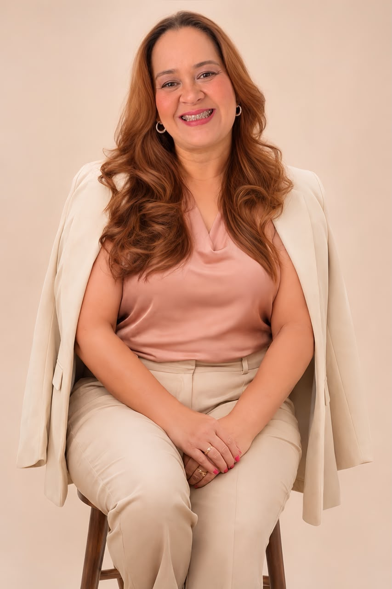

Alisamentos
Atendimento profissional com avaliação e orientação personalizada, com o Método Lisos Sofisticados.
Agendar pelo WhatsAppMétodo exclusivo
Sua beleza merece um cuidado à altura.
“Mais do que transformar cabelos, minha missão é proporcionar uma experiência de beleza com técnica, dedicação e cuidado em cada detalhe.”
Carmen Bastos Especialista em Lisos e Tratamentos Capilares
A assinatura do studio
Uma assinatura de beleza, cuidado e sofisticação.
O Método Lisos Sofisticados representa minha maneira de trabalhar: com atenção às necessidades de cada cabelo, valorizando a individualidade, a técnica e o cuidado em cada etapa do atendimento.
Atenção às características e necessidades dos fios.
Experiência e dedicação em cada atendimento.
Uma experiência pensada para valorizar sua beleza.

Minha história, meu propósito
“Não quero ser concorrência.
Quero ser referência.”
Minha trajetória na beleza começou há aproximadamente 12 anos, na Bahia, onde busquei minha formação no Senac e descobri minha paixão pela profissão.
Em 2020, me mudei para São Paulo em busca de novas oportunidades. Em 2023, comecei uma nova etapa profissional na cidade, enfrentando desafios, superações e momentos de aprendizado.
Hoje, à frente do Studio Carmen Bastos, sigo construindo minha identidade profissional com dedicação, conhecimento e amor pelo que faço.
Para mim, cuidar dos cabelos também é cuidar da autoestima. Quero que cada mulher que se sente na minha cadeira se sinta respeitada, valorizada e acolhida.
“Minha história é feita de coragem, persistência e propósito. E ainda tenho muitos sonhos para realizar.”
Com carinho, Carmen Bastos.
Serviços e especialidades
Atendimento profissional com avaliação e orientação personalizada, com o Método Lisos Sofisticados.
Agendar pelo WhatsAppCuidados direcionados às necessidades de cada cabelo.
Agendar pelo WhatsAppAtendimento com avaliação e atenção ao que você deseja para o seu cabelo.
Agendar pelo WhatsAppAtendimento com avaliação e orientação personalizada para os seus fios.
Agendar pelo WhatsAppCuidado e atenção aos detalhes para valorizar o seu olhar.
Agendar pelo WhatsApp“Cada mulher que chega ao meu studio traz uma história, uma expectativa e uma beleza única. Meu compromisso é oferecer um atendimento com respeito, atenção e dedicação, fazendo de cada visita uma experiência especial.”
Carmen Bastos
@studiocarmenbastos
Acompanhe meu trabalho, meus resultados e um pouco da minha rotina profissional.
Localização
Atendimento com horário agendado. Combine o seu pelo WhatsApp antes da visita.
Agendamento
Será um prazer receber você no Studio Carmen Bastos. Agende sua avaliação e venha viver uma experiência de cuidado pensada para você.
Agendar pelo WhatsApp